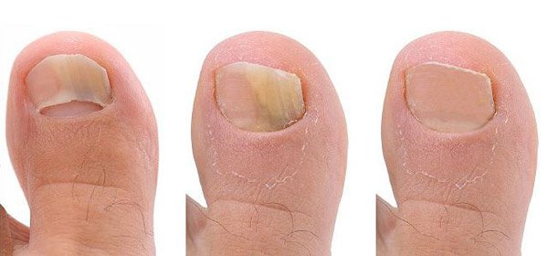
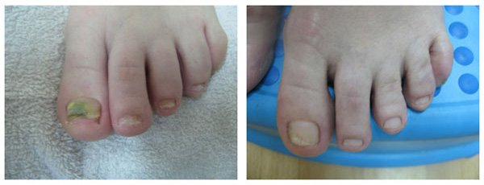
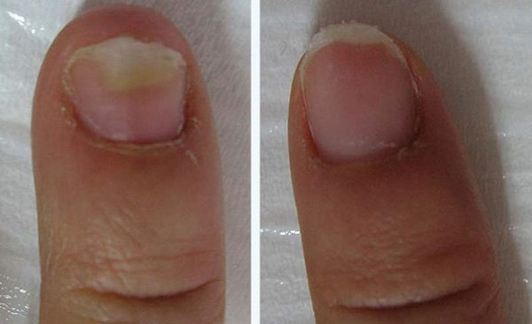
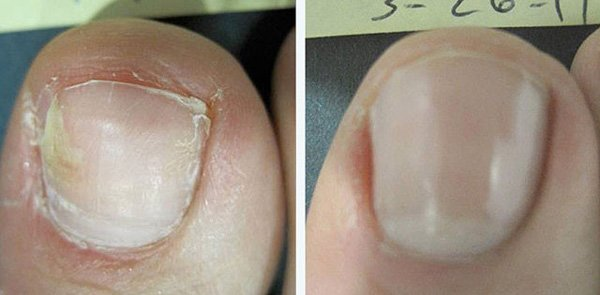

SaNaTATE
Ciuperca piciorului si a unghiei ce tip de pericol se ascunde in aceasta boala si cum sa scapi de ea?
Editori: Potrivit statisticilor, aproape una din cinci persoane de pe Pamant sufera de ciuperci ale piciorului si unghiei. Cauzele aparitiei acestora sunt diferite - de la sistemul imunitar slabit la pantofii care nu se potrivesc picioarelor tale.
Azi, Nicoleta Cotfas va va spune cum descoperirile moderne din domeniul medicinei iti permit sa scapi de o boala atat de periculoasa si neplacuta, cum e ciuperca unghiei si a piciorului intr-o luna, acasa.
Nicoleta Cotfas Vom incepe discutia noastra de astazi cu faptul ca exista numeroase persoane care considera ciuperca piciorului si a unghiei doar un defect estetic si cred ca nu poate avea riscuri asupra sanatatii. Dar oare asa este? Sa descoperim!
Nicoleta Cotfas va va spune in emisiunea „Ce Se intampla, Doctore?” cum sa vindecati ciuperca piciorului si a unghiei.
Ciuperca piciorului si a unghiei sau onicomicoza, dupa denumirea sa stiintifica, este o amenintare serioasa la adresa sanatatii in stadii avansate ale unei boli. Onicomicoza persistenta poate provoca reactii alergice, poate slabi sistemul imunitar si poate duce la agravarea bolilor cronice. Asta inseamna ca, daca ai o boala cronica, dezvoltarea ciupercii va mari de cateva ori probabilitatea agravarii!
Cu alte cuvinte, o problema simpla a picioarelor si unghiilor se poate transforma intr-o amenintare serioasa la adresa vietii persoanei respective! In acest context, este necesar sa retinem urmatoarele:
in primul rand, ciuperca nu este o „simpla problema a picioarelor si unghiilor”, ci o infestare parazita completa a corpului. Intreaga problema a piciorului si unghiei este provocata de paraziti care si-au ocupat pozitia pe corpul tau si il folosesc ca adapost. In al doilea rand, ciuperca in sine nu este o amenintare letala, dar actioneaza ca agent catalizator pentru toate bolile pe care le ai deja.
Mai pe scurt, daca ai probleme cronice, de exemplu cu stomacul sau ficatul, prezenta ciupercii care afecteaza negativ sistemul imunitar va creste automat posibilitatea transformarii bolilor cronice in boli acute.
Nicoleta Cotfas: Sa enumeram simptomele onicomicozei
Care sunt primele simptome ale onicomicozei? Cum poti diagnostica existenta acestei amenintari?
Sa enumeram simptomele onicomicozei.
- - Crapaturi in cutele dintre degete (de regula, intre primul si al doilea, respectiv intre al patrulea si al cincilea deget)
- - Umflaturi pe piele
- - Mancarime
- - Roseata
- - Senzatie de arsura
- - Degete ingrosate, unghii fragile si casante
Totul incepe in zona picioarelor, cel mai adesea intre cutele dintre degete. De regula, primul simptom al ciupercii piciorului este exfolierea pielii, insotita de arsuri si mancarimi.
Conform statisticilor noastre, aproximativ 20% dintre cetatenii romani au ciuperca. Unii pacienti o au in faza incipienta, deci e usor de eliminat, dar in alte cazuri, boala a progresat prea mult si atunci tratamentul dureaza mai mult timp. Problema este ca nu toata lumea cere ajutor medical. Multi cred, din anumite motive, ca ciuperca va disparea ca prin minune, de la sine, si totul va reveni la normal. De fapt, acesti paraziti nu vor disparea pur si simplu decat daca faci ceva in aceasta privinta. Ciuperca se va raspandi mai departe pe tot corpul tau, acoperind intregul picior si unghiile.
Tratamentul ciupercii piciorului si unghiilor
Acum in sfarsit am ajuns la partea principala, cum se vindeca aceasta problema. in ceea ce priveste tratamentul traditional, care este oferit adesea in clinicile noastre, unghiile infectate sunt indepartate chirurgical, dupa care pacientul are o perioada de recuperare de 1-2 luni. Din punctul meu de vedere, este o metoda destul de barbara pentru secolul XXI. Dar medicii din clinicile noastre ofera aceasta optiune in 99% dintre cazuri! Ridicati mana cei care nu ati vrea sa rezolvati aceasta problema chirurgical.
Nicoleta Cotfas Ei bine, pot vedea o padure de maini!
In prezent, exista alte metode mult mai convenabile pentru tratamentul ciupercii piciorului si a unghiei si incercam din greu sa le introducem in sistemul public de sanatate.
Centrele comerciale specializate le ofera pacientilor lor diferite metode de eliminare a ciupercii piciorului si unghiei. Principalul minus in acest caz este pretul. Costul procedurilor care elimina ciuperca se ridica la 1000 euro. E clar ca nu toata lumea isi permite.
Desigur, am venit la studio azi nu pentru a incheia programul intr-o nota atat de pesimista. Alina Simion, care a suferit de un caz neglijat de onicomicoza abia cu o luna in urma, ma va ajuta sa adaug putin optimism. Ea a vindecat-o cu un spray de picioare împotriva paraziților și ciupercii.
Invitata emisiunii
Alina Simion
Am început testarea independentă a spray-ului în centrul nostru. Pe baza rezultatelor, se poate spune că acest spray chiar ajută toți pacienții. În 97% din cazuri îndepărtează ciuperca de pe picioarele și unghiile pacientului complet. După îndepărtarea ciupercii, spray-ul poate fi folosit ca metodă de prevenție a infestărilor ulterioare, care, având în considerare mediul, pot avea loc în orice moment. Cât despre preț, spray-ul este de 30-40 de ori mai ieftin decât procedurile din centrele medicale. Iar eficiența sa este chiar mai mare.
Aici este fotografia Alinei (ea a fost unul dintre participanții la grupul de testare). Aici sunt rezultatele aplicării spray-ului pe o perioadă de 30 de zile:
 Rezultatul aplicării spray-ului după 30 de zile
Suntem 100% încrezători în eficiența spray-ului
In primul rand, este un produs patentat oficial, care a trecut toate testele. in al doilea rand, am testat noi insine produsul pe pacienti, deoarece nu avem incredere in datele statisticilor oficiale. Dupa cum am scris deja, are rezultate minunate. Spray-ul contine urmatoarele ingrediente: clotrimazol, miere, vitamine, limonen, cu efecte antibacteriene si calmante; te scapa de mancarime si are un efect distructiv asupra coloniilor micotice. Clotrimazolul dezinfecteaza, iar limonenul ajuta la alinarea durerii. Mierea are un efect relaxant, calmant si antiinflamator; iar vitaminele vindeca si lupta impotriva inflamatiilor si de asemenea calmeaza pielea, ceea ce este foarte important dupa o zi lunga si grea. Spray-ul elimina ciuperca (chiar si acele tipuri care pot fi indepartate doar prin interventie chirurgicala) si rezolva o multime de probleme, inclusiv mancarimi, exfoliere, senzatii neplacute, miros neplacut.
Este un remediu cu adevărat unic, care a devenit tot mai popular în întreaga lume. Ministerul Sănătății din România a aranjat ca acest spray să se vândă în țara noastră doar la preț de producător, adică, din punct de vedere comercial, la costul de producție. Cetatenii din Romania au ocazia s-o achizitioneze la cel mai mic pret posibil. Acum este posibil să achiziționezi spray-ul de pe internet. Oricine poate face o comanda cu usurinta, pentru a cumpara acest produs pentru uz personal. Livrarea se face prin posta sau curier (plata la livrare, cu verificare colet), aplicarea sa nu necesita nicio competenta speciala.
Produs natural pentru ciuperca piciorului si a unghiei
In prezent, produsul este disponibil doar pe site-ul oficial al proiectului. Negociem cu retelele de farmacii, dar toate doresc sa faca mai multi bani de pe urma . Iar pozitia noastra, precum si parerea Ministerului Sanatatii, este exact opusa: ar trebui vanduta la costuri minime, pentru a ajunge la toti cei care au nevoie de ea (ceea ce este o actualitate, din cauza infectiilor in masa cu ciuperca).
Exista restrictii la aplicarea acestei creme?
Spray-ul nu este un medicament chimic, deci nu există contraindicații. În timpul testului nostru, spray-ul a fost oferit la 17.254 de pacienți ai centrului și niciunul dintre aceștia nu a avut reacții alergice la ingredientele sale. Spray-ul nu provoacă daune sănătății, în același timp scapă în mod eficient corpul de diferite tipuri de ciupercă, inclusiv cele mai periculoase care există în prezent. De asemenea, doresc să menționez clar că acest spray poate fi folosit și de copii.
in concluzie, doresc sa precizez o veche zicala: „Daca te ineci, esti pe cont propriu.” Ciuperca piciorului si a unghiei nu este doar un defect estetic, este o boala destul de grava, care poate duce la consecinte foarte grave. E mai bine sa te ocupi de ea acum, inainte sa fie prea tarziu.
P.S.: Am făcut o solicitare către producătorii spray-ului. Acum, cititorii nostri au ocazia de a comanda la jumatate de pret!
Fiti sanatosi pana data viitoare!
Nicoleta Cotfas, programul „Ce se intampla, Doctore?”
Am comandat aceasta crema pentru mine. Situatia unghiilor mele era pur si simplu groaznica... Credeam ca va trebui sa le indepartez... Dar dupa ce am folosit crema timp de 30-40 de zile, unghiile mele au revenit la normal! Nici nu va puteti inchipui ce fericita am fost )
Cand am inceput sa aplic spray-ul, nu ma asteptam ca efectele sa fie atat de grozave. Sunt foarte fericit ca mi-am rezolvat toate problemele picioarelor si unghiilor si ca ciuperca a fost invinsa!
Am comandat spray-ul , mi-a fost livrata de curier a doua zi. Am completat un curs complet de tratament. Sunt ingrozita cand ma gandesc cum am trait cu asta.
Am aplicat spray-ul timp de doua saptamani. Azi este a 16-a zi, iar rezultatul este grozav! Am incercat multe alte lucruri inainte, aproape m-am otravit cu medicamente antifungice, dar unghiile au ramas mancate de ciuperca. Nu pot exprima ce fericire am simtit cand am reusit s-o vindec! Am facut o poza unghiilor inainte. Aici sunt pozele inainte si dupa spray, uitati-va:

si eu am comandat. Mi s-a promis ca imi va fi livrata intr-o saptamana, abia astept pachetul.
Aveam un stadiu avansat de infectie fungica, stiu ca am lasat boala sa se dezvolte pentru ca am crezut ca nu e nimic grav. Am realizat ca era intr-adevar grav cand inflamatiile mele s-au inrautatit. Medicii din clinici mi-au sugerat indepartarea ciupercii. intr-o clinica privata mi s-a spus ca pot sa o indepartez cu laser, ar fi fost nevoie de 7-8 sesiuni, pretul fiecareia fiind de 250 euro. Salariul meu e abia de 200 euro! si, cu siguranta, nu voiam sa-mi fie indepartate mai multe unghii deodata. Nu as fi putut sa mai ies din casa dupa aceea. Am incercat aproape toate remediile traditionale - nimic nu a ajutat. Am fost norocoasa - am vazut undeva informatii despre spray-ul si am comandat-o. Sincera sa fiu, nu ma asteptam la niciun rezultat decent. Dar ciuperca a disparut intr-o luna si jumatate! Complet! Nu-mi venea sa cred ca este posibil sa scap de ea. Deci, vreau sa va multumesc foarte calduros! imi cer scuze ca am trancanit asa mult, dar sunt foarte emotionata in acest moment )
Cei care au ciuperca pe picioare sunt de fapt norocosi! Eu am avut pe brate, va puteti inchipui ce scarbos arata?! Oamenii se simteau atat de amenintati cand imi vedeau bratele, era atat de frustrant... ma simteam foarte rusinata. Dar nu o puteam vindeca, nimic nu ajuta. Acum folosesc acest spray (au trecut doar 2 saptamani) si iata rezultatele! 
O comand in mod regulat. intreaga mea familie o foloseste. L-a ajutat pe fiul meu foarte mult cand a avut probleme.
Am cumparat-o pentru ca am avut ciuperca. Am suferit mult timp, eram foarte satul de ea. Am aplicat-o cateva saptamani si totul a disparut.
Interviul este foarte interesant, multumesc. ii ajutati pe oameni sa-si deschida ochii!
Nu e o inselatorie? De ce se vinde pe Internet?
Victoria, ai citit de fapt articolul? Se vinde pe internet pentru ca nenorocitii aia din industria farmaceutica vor doar sa faca bani de pe urma ei! Cum poate fi o inselatorie, avand in vedere ca plata se face la livrare? Am comandat-o, mi-a fost livrata de catre curier, am verificat coletul si am platit. Daca livrarea este prin posta, totul este exact la fel - banii la livrare. in plus, totul se vinde prin internet acum, de la haine la echipamente si mobila.
imi cer scuze, nu am observat informatiile despre plata la livrare pe site. Este in regula, in acest caz, plata la livrare este perfect sigura. Voi face si eu comanda.
si eu vreau sa-mi impartasesc bucuria. Unghiile mele erau afectate mereu si ma dureau, am incercat sa le tratez cu un lac special de unghii si am luat si pastile. Lacul avea doar un efect temporar. Acum folosesc spray-ul , puteti vedea rezultatul in poze. Mi-am masat unghiile cu ea timp de 3 saptamani, dar am decis sa urmez intregul tratament (o luna). 
Multumesc foarte mult pentru acest sfat. in sfarsit am scapat de ciuperca. Atat de multe rahaturi ni se intampla in viata asta! )
Am citit si eu parerile si am realizat ca trebuie s-o cumpar ) Voi face comanda.